ខេត្តនៅក្នុងប្រទេសកម្ពុជា
សូមស្វាគមន៏មកកាន់ខេត្តកំពង់ឆ្នាំង
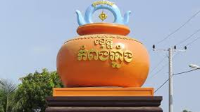
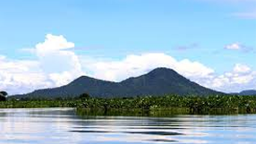
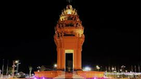
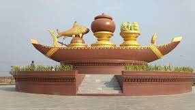
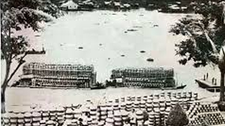
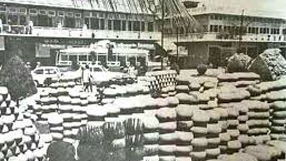
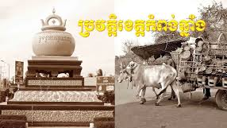
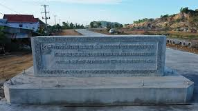
ខេត្តកំពង់ឆ្នាំង គឺជាខេត្តមួយដែលមានប្រវត្តិយូរលង់ និងសម្បូរបែប ដែលមានទំនាក់ទំនងយ៉ាងជិតស្និទ្ធជាមួយនឹងភូមិសាស្ត្រជាប់ដងទន្លេសាប និងសិប្បកម្មផលិតកុលាលភាជន៍ (ដីដុត)។
១. និរុត្តិសាស្ត្រ និងប្រភពឈ្មោះ
ឈ្មោះ "កំពង់ឆ្នាំង" បានមកពីពាក្យខ្មែរពីររួមបញ្ចូលគ្នាគឺ៖
កំពង់ (Kampong) មានន័យថា "ផែ" "ទីប្រជុំទឹក" ឬ "កំពង់ទឹក"។
ឆ្នាំង (Chhnang) មានន័យថា "ក្អម ឆ្នាំង" ឬ "ភាជន៍ដីដុត"។
ដូចនេះ កំពង់ឆ្នាំង មានន័យត្រង់ថា «កំពង់ផែនៃឆ្នាំងដី» ឬ «កំពង់ដែលលក់ដូរភាជន៍ដីដុត»។
មូលហេតុនៃឈ្មោះ: តាំងពីសម័យបុរាណ ខេត្តកំពង់ឆ្នាំងគឺជា កំពង់ផែដ៏សំខាន់ មួយនៅតាមដងទន្លេសាប។ កំពង់ផែនេះបានក្លាយជាមជ្ឈមណ្ឌលលក់ដូរដ៏ធំមួយនូវសម្ភារប្រើប្រាស់ធ្វើអំពីដីដុត ដូចជា ក្អម ឆ្នាំង ចង្ក្រាន និងវត្ថុប្រើប្រាស់ផ្សេងៗទៀត ដែលផលិតដោយប្រជាជនក្នុងមូលដ្ឋាន។ ដោយសារកុលាលភាជន៍ទាំងនេះមានសារៈសំខាន់ខ្លាំងសម្រាប់ជីវភាពប្រចាំថ្ងៃរបស់ប្រជាជន ឈ្មោះកំពង់ផែនេះក៏បានជាប់ហៅថា "កំពង់ឆ្នាំង" រហូតមក។
២. ប្រវត្តិសាស្ត្រសម័យបុរាណ និងអង្គរ
ប្រវត្តិសាស្ត្ររបស់ខេត្តកំពង់ឆ្នាំងមានតាំងពីយូរលង់ណាស់មកហើយ៖
អតីតកាលជាតំបន់ពាណិជ្ជកម្ម: យោងតាមភស្តុតាងបុរាណវត្ថុវិទ្យាបានបង្ហាញថា ខេត្តកំពង់ឆ្នាំងធ្លាប់ជាទីក្រុងជាប់ឆ្នេរសមុទ្រដ៏មមាញឹកមួយ ស្ថិតនៅលើផ្លូវពាណិជ្ជកម្មរវាងប្រទេសចិន និងឥណ្ឌា កាលពីរាប់សតវត្សមុន។
ការជីកកកាយ: តាមរយៈការជីកកកាយវត្ថុបុរាណនៅតំបន់នេះ បានរកឃើញភស្តុតាងដែលទាក់ទងនឹងអរិយធម៌ ទ្វារវតី (Dvaravati) ដែលមានអាយុកាលតាំងពីសតវត្សរ៍ទី ៦ ដល់សតវត្សរ៍ទី ១១ ដែលបញ្ជាក់ពីអាយុកាលដ៏ចំណាស់របស់តំបន់នេះ។
សម័យអង្គរ: ដូចទៅនឹងខេត្តដទៃទៀតនៅកម្ពុជា ខេត្តកំពង់ឆ្នាំងក៏ធ្លាប់ជាផ្នែកមួយនៃចក្រភពខ្មែរដ៏រុងរឿងផងដែរ ហើយត្រូវបានគេស្គាល់ថាជាតំបន់សំខាន់សម្រាប់ កសិកម្ម និង សិប្បកម្ម។
ការផ្លាស់ប្តូរភូមិសាស្ត្រ: ដោយសារតែមានកំណកដីពីទន្លេមេគង្គ បន្ទាត់ឆ្នេរសមុទ្របានរើទៅឆ្ងាយពីរាជធានីដើម ហើយនៅពេលដែលទន្លេសាបបានផ្លាស់ប្តូរខ្សែទឹករបស់ខ្លួន ទីក្រុងចាស់ក៏ត្រូវបោះបង់ចោល ហើយប្រជាជនបានផ្លាស់ទីទៅតំបន់មួយឈ្មោះថា កំពង់ត្រឡាច។ ប៉ុន្តែក្រោយមក ក៏មានការកកើតទីតាំងថ្មីនៅជុំវិញតំបន់កំពង់ឆ្នាំងបច្ចុប្បន្នឡើងវិញ។
៣. ការបន្តរហូតដល់បច្ចុប្បន្ន
សិប្បកម្មដីដុត: សិប្បកម្មធ្វើឆ្នាំងដីនៅតែបន្តជាអត្តសញ្ញាណដ៏សំខាន់របស់ខេត្តរហូតមកដល់សព្វថ្ងៃ ដោយមានភូមិមួយចំនួនដូចជា ភូមិអណ្តូងឫស្សី ជាដើម ដែលមានគ្រួសារស្ទើរតែទាំងអស់ប្រកបរបរផលិតកុលាលភាជន៍។
ការអភិវឌ្ឍន៍: បច្ចុប្បន្ន ខេត្តកំពង់ឆ្នាំងគឺជាខេត្តកណ្ដាលមួយរបស់កម្ពុជា ដែលមានសេដ្ឋកិច្ចផ្អែកលើវិស័យ កសិកម្ម (ផលិតស្រូវ) នេសាទ និង សិប្បកម្ម។
ទីតាំងយុទ្ធសាស្ត្រ: ខេត្តនេះមានចម្ងាយប្រមាណ ៩១ គីឡូម៉ែត្រពីទីក្រុងភ្នំពេញ និងស្ថិតនៅជាប់ដងទន្លេសាប ដែលធ្វើឱ្យវាក្លាយជាតំបន់មានសក្តានុពលផ្នែកពាណិជ្ជកម្ម និងទេសចរណ៍។
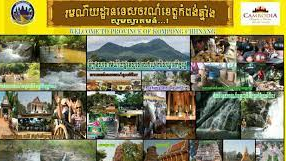
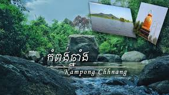
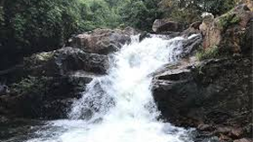
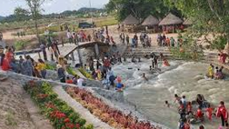
ខេត្តកំពង់ឆ្នាំង សម្បូរទៅដោយកន្លែងទេសចរណ៍ដ៏គួរឱ្យចាប់អារម្មណ៍ជាច្រើន ដែលមានលក្ខណៈពិសេសប្លែកពីគេ រួមបញ្ចូលគ្នារវាងទេសភាពធម្មជាតិស្រស់បំព្រង ភ្នំល្បីៗ ជីវិតរស់នៅតាមដងទន្លេ និងអត្តសញ្ញាណវប្បធម៌ដ៏យូរលង់នៃការធ្វើកុលាលភាជន៍។
ខាងក្រោមនេះជាតំបន់ទេសចរណ៍សំខាន់ៗដែលលោកអ្នកមិនគួរមើលរំលង៖
១. ទេសចរណ៍វប្បធម៌ និងជីវភាពរស់នៅ
ក. ភូមិបណ្តែតទឹក (Floating Village)
ជាទីកន្លែងដែលអ្នកទេសចរអាចជិះទូកកម្សាន្តតាមដងទន្លេសាប ដើម្បីទស្សនាជីវិតរស់នៅប្រចាំថ្ងៃរបស់ប្រជាពលរដ្ឋដែលរស់នៅលើផ្ទះអណ្ដែតទឹក ឬផ្ទះសសរខ្ពស់ៗ។ ពួកគាត់ប្រកបរបរនេសាទត្រី និងធ្វើពាណិជ្ជកម្មតាមដងទន្លេ។
ភូមិអណ្ដែតទឹកល្បីៗមានដូចជា ភូមិចុងកោះ (ជាភូមិខ្មែរ) និង ភូមិកណ្តាល (ជាភូមិជនជាតិវៀតណាម)។
ខ. ភូមិធ្វើឆ្នាំងអណ្តូងឫស្សី (Andong Russei Pottery Village)
អត្តសញ្ញាណរបស់ខេត្ត: កំពង់ឆ្នាំងមានន័យថា "កំពង់ផែឆ្នាំង"។ ភូមិអណ្តូងឫស្សី ដែលមានចម្ងាយប្រហែល ៧ គីឡូម៉ែត្រពីទីរួមខេត្ត គឺជាកន្លែងដែលភ្ញៀវទេសចរអាចឃើញសិល្បៈធ្វើឆ្នាំងដីបុរាណដែលបានបន្សល់ទុកតាំងពីសតវត្សរ៍ទី ៦ ។
អ្នកភូមិស្ទើរតែទាំងអស់ប្រកបរបរធ្វើក្អម ឆ្នាំង និងវត្ថុប្រើប្រាស់ផ្សេងៗពី ដីក្រហម ដែលយកមកពីភ្នំ ក្រាំងដីមាស។ លោកអ្នកអាចទស្សនាដោយផ្ទាល់នូវរបៀបនៃការឆ្លាក់ កាច់ និងដុតឆ្នាំងដោយដៃ។
គ. វត្តត្រឡែងកែង
ជាទីតាំងប្រវត្តិសាស្ត្រដ៏សំខាន់នាសម័យកាលលង្វែក (សម័យកាលមួយបន្ទាប់ពីសម័យអង្គរ)។ វត្តនេះស្ថិតនៅស្រុកកំពង់ត្រឡាច។
២. ទេសចរណ៍ធម្មជាតិ និងតំបន់ភ្នំ
ខេត្តកំពង់ឆ្នាំងក៏ល្បីល្បាញដោយសារតំបន់ភ្នំដែលមានទេសភាពស្រស់ស្អាតដូចជា៖
ក. ភ្នំនាងកង្រី (Phnom Neang Kong Rei)
ជាភ្នំដ៏ល្បីល្បាញបំផុតក្នុងខេត្ត ដែលស្ថិតនៅស្រុកកំពង់លែង។ ភ្នំនេះមានរាងដូច នាងដេកសណ្ដូកខ្លួន បើមើលពីចម្ងាយពីត្រើយម្ខាងនៃទន្លេផ្សារក្រោម។ ភ្នំនេះមានរឿងព្រេងនិទានភ្ជាប់ជាមួយ និងមានព្រៃឈើខៀវស្រងាត់ដែលអនុញ្ញាតឱ្យភ្ញៀវទេសចរឡើងលំហែកាយ។
ខ. តំបន់ទឹកធ្លាក់ស្រុកទឹកផុស
ជាតំបន់ដែលកំពុងទាក់ទាញភ្ញៀវទេសចរជាតិយ៉ាងខ្លាំងនាពេលបច្ចុប្បន្ន ដោយសារតែផ្លូវធ្វើដំណើរមានភាពងាយស្រួល។ ទឹកធ្លាក់ល្បីៗរួមមាន៖
ទឹកធ្លាក់ថ្មក្រាល: ជាតំបន់ធម្មជាតិដែលមានភ្ញៀវទៅលេងច្រើនជាងគេ។
ទឹកធ្លាក់ស្រែអំពិល: ភ្ញៀវទេសចរអាចទៅងូតទឹកលេង និងស្រូបយកខ្យល់អាកាសបរិសុទ្ធ។
ទឹកធ្លាក់អន្លង់ស្វាយ។
គ. ភ្នំរាប់បាត្រ និងភ្នំសន្ទូច
ភ្នំរាប់បាត្រ (Phnom Roap Bat): ជាកន្លែងវប្បធម៌ និងធម្មជាតិ ដែលមានវត្តអារាម និងទេសភាពស្រស់បំព្រង។ គេជឿថាមានបោះជំហានរបស់លោកតាព្រហ្មនៅលើកំពូលភ្នំ។
ភ្នំសន្ទូច (Phnom Santouch): ស្ថិតនៅជិតទីរួមខេត្ត ហើយអាចមើលឃើញទេសភាពដ៏ស្រស់ស្អាតនៃបឹងទន្លេសាប និងតំបន់ជុំវិញ។
៣. តំបន់ប្រវត្តិសាស្ត្រផ្សេងៗ
ភ្នំតាពេជ្រ (Phnom Ta Pi) និង ភ្នំតារាជ (Phnom Ta Reach): ជាតំបន់ធម្មជាតិ និងប្រវត្តិសាស្ត្រដែលទាក់ទងនឹងរបបប៉ុលពត (ឆ្នាំ ១៩៧៧-១៩៧៩)។
វត្តភ្នំរបាត (Wat Phnom Robath): ជាវត្តអារាមដែលស្ថិតនៅលើកំពូលភ្នំខ្ពស់ជាងគេក្នុងតំបន់ និងផ្ដល់នូវទិដ្ឋភាពជុំវិញខេត្តយ៉ាងស្រស់ស្អាត។


ខេត្តកំពង់ចាម ជាខេត្តមួយសម្បូរទៅដោយម្ហូបអាហារប្រចាំតំបន់ និងម្ហូបខ្មែរទូទៅដែលមានរសជាតិឈ្ងុយឆ្ងាញ់ ជាពិសេសម្ហូបដែលទាក់ទងនឹងផលនេសាទពីដងទន្លេមេគង្គ។
ខាងក្រោមនេះជាមុខម្ហូបល្បីៗ និងពិសេសដែលអ្នកគួរតែសាកល្បងពេលទៅដល់ខេត្តកំពង់ចាម៖
១. មុខម្ហូបពិសេសប្រចាំខេត្ត
មុខម្ហូបទាំងនេះធ្លាប់ត្រូវបានក្រសួងវប្បធម៌ និងវិចិត្រសិល្បៈកំណត់ថាជាម្ហូបពិសេសប្រចាំខេត្តកំពង់ចាម៖
សម្លប្រហើរល្ពៅសម្រស់បុប្ផាភ្នំប្រុសភ្នំស្រី: ជាសម្លដែលមានគ្រឿងផ្សំពីល្ពៅ និងគ្រឿងផ្សំខ្មែរ ដែលមានរសជាតិប្រហើរឈ្ងុយឆ្ងាញ់។
ម្ជូរខ្ទិះក្តាមកំពង់ចាមចាំស្នេហ៍: ជាសម្លម្ជូរដែលមានរសជាតិប្រៃ ផ្អែម ជូរហឹរ លាយជាមួយនឹងរសជាតិខ្ទិះដូង និងសាច់ក្តាម ដែលជាមុខម្ហូបប្លែកនិងពេញនិយម។
បង្អែមល្ពៅសង់ខ្យាបុប្ផាអង្គរបាជ័យ: ជាបង្អែមខ្មែរធ្វើពីល្ពៅ ជាមួយសង់ខ្យា (ខ្ទិះដូង ពងមាន់ ស្ករ) មានរសជាតិផ្អែមឈ្ងុយឆ្ងាញ់ សម្រាប់ពិសាបញ្ចប់អាហារ។
២. ម្ហូបអាហារពេញនិយមផ្សេងៗទៀត
ក្រៅពីម្ហូបពិសេសខាងលើ ក៏មានម្ហូបខ្មែរល្បីៗផ្សេងទៀតដែលអ្នកអាចរកបាននៅតាមទីផ្សារ និងតំបន់មាត់ទន្លេ៖
តាសក់ចាវ: អាហារប្រចាំខេត្តដ៏ល្បីឈ្មោះមួយទៀត ដែលប្រជាជនខ្មែរនិយមចូលចិត្តទុកពិសាជាមួយបាយ ឬបបរ ឬយកទៅចិញ្ច្រាំចៀនជាមួយពងទា និងស្លជាមួយសាច់ជ្រូក។ តាសក់ចាវមានរសជាតិ ប្រៃផ្អែមល្មម។
ត្រីអាំងមេគង្គ: ដោយសារខេត្តកំពង់ចាមស្ថិតនៅតាមដងទន្លេមេគង្គ ត្រីដែលយកមកអាំងមានរសជាតិស្រស់ឆ្ងាញ់ ជាពិសេសត្រីឆ្មក់ ឬត្រីរ៉ស់អាំង។ អ្នកអាចរកបាននៅតាមភោជនីយដ្ឋានមាត់ទន្លេ។
បាយត្រីចៀន: ជាអាហារពេញនិយមនៅមាត់ទន្លេកំពង់ចាម តាំងពីយូរណាស់មកហើយ (ពេញនិយមតាំងពីឆ្នាំ ១៩៩១)។
នំបញ្ចុក: ដូចបណ្តាខេត្តដទៃ នំបញ្ចុកក៏មានប្រជាប្រិយភាពដែរ ជាពិសេសសម្រាប់អាហារពេលព្រឹក។ អ្នកអាចសាកល្បង នំបញ្ចុកសម្លរខ្មែរ ឬ នំបញ្ចុកសម្លរណាំយ៉ា (នំបញ្ចុកកូកូ)។
បាយសាច់ជ្រូកអាំង (បាយសាច់ជ្រូក): ជាអាហារពេលព្រឹកដ៏សាមញ្ញ តែមានរសជាតិឆ្ងាញ់ប្លែក ជាមួយសាច់ជ្រូកចង្កាក់អាំង និងទឹកត្រីផ្អែម។
អាម៉ុកត្រី (Amok Trey): ជាមុខម្ហូបជាតិដែលមានរសជាតិឈ្ងុយខ្ទិះដូង និងគ្រឿងការី ជាធម្មតាត្រូវបានធ្វើជាមួយសាច់ត្រី។
៣. អាហារតាមដងផ្លូវ និងផ្លែឈើ
លតឆា (Lort Cha): ជាមីខ្លីឆាជាមួយពងទា សណ្ដែកបណ្ដុះ និងសាច់ ដែលមានលក់យ៉ាងច្រើននៅតាមទីផ្សារ និងផ្លូវនានា។
ផ្លែឈើត្រូពិក: ខេត្តកំពង់ចាមក៏ល្បីល្បាញលើដំណាំផ្លែឈើដែរ ដូចជា ផ្លែទៀបបារាំង (Dragon Fruit) មៀន ស្វាយ និងជាពិសេស ធូរេន (ស្តេចផ្លែឈើ)។ អ្នកអាចរកទិញផ្លែឈើស្រស់ៗនៅផ្សារកំពង់ចាម។
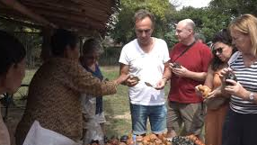
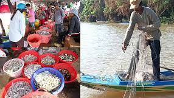
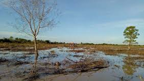
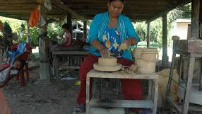
ខេត្តកំពង់ឆ្នាំង ជាខេត្តមួយដែលមានទីតាំងនៅតំបន់វាលទំនាបកណ្តាលរបស់ប្រទេសកម្ពុជា និងមានព្រំប្រទល់ជាប់នឹងទន្លេសាប ដែលធ្វើឲ្យជីវភាព និងរបៀបរស់នៅរបស់ប្រជាជនមានលក្ខណៈពិសេស និងពឹងផ្អែកយ៉ាងខ្លាំងទៅលើវិស័យ កសិកម្ម នេសាទ និងសិប្បកម្ម។
១. ទិន្នន័យប្រជាជន និងជនជាតិភាគតិច
ចំនួនប្រជាជន: យោងតាមជំរឿនឆ្នាំ ២០១៩ ខេត្តកំពង់ឆ្នាំង មានប្រជាជនសរុបប្រមាណ ៥២៧,០២៧ នាក់។
មុខរបរចម្បង: ភាគច្រើននៃប្រជាជន (ប្រហែល ៨៥,៥%) ជា កសិករ។ ក្រៅពីនេះក៏មាន ពាណិជ្ជករ អ្នកនេសាទ និង មន្ត្រីរាជការ។
ជនជាតិភាគតិច: ខេត្តនេះមានភាពសម្បូរបែបខាងជនជាតិភាគតិច ដោយភាគច្រើនជាជនជាតិ ខ្មែរ។ ក្រៅពីនេះ ក៏មានសហគមន៍ ជនជាតិចាម (ដែលភាគច្រើនកាន់សាសនាឥស្លាម) និង ជនជាតិវៀតណាម រស់នៅតាមដងទន្លេសាប និងតំបន់អុំទូក។
២. របៀបរស់នៅប្រចាំថ្ងៃ និងសេដ្ឋកិច្ច
របៀបរស់នៅរបស់ប្រជាជននៅកំពង់ឆ្នាំងមានលក្ខណៈសាមញ្ញ និងផ្អែកលើចង្វាក់នៃធម្មជាតិ (ថ្ងៃរះ-ថ្ងៃលិច) ជាពិសេសនៅតាមតំបន់ជនបទ។
កសិកម្ម និងនេសាទ:
ជីវភាពនៅតំបន់ដីគោកគឺពឹងផ្អែកលើ ការដាំដុះស្រូវ និងដំណាំផ្សេងៗ។
ជីវភាពនៅតំបន់មាត់ទន្លេគឺផ្អែកលើ ការនេសាទត្រី (ពីទន្លេសាប) ជាប្រភពអាហារ និងចំណូលដ៏សំខាន់។
សិប្បកម្មប្រពៃណី (ដីដុះ):
ខេត្តកំពង់ឆ្នាំងមានឈ្មោះល្បីល្បាញដោយសារពាក្យថា "ឆ្នាំង" ដែលមានន័យថា "ផើងដី"។ ប្រជាជននៅទីនេះមានជំនាញក្នុងការ ធ្វើឆ្នាំង (គ្រឿងស្មូន) ដូចជា ឆ្នាំងដី ផើង ក្រឡ ជាដើម ដែលជាផលិតផលប្រពៃណីដ៏សំខាន់របស់ខេត្ត។
៣. ភូមិបណ្តែតទឹក និងជីវិតតាមមាត់ទន្លេ (លក្ខណៈពិសេស)
ខេត្តកំពង់ឆ្នាំងល្បីល្បាញបំផុតដោយសារភូមិបណ្តែតទឹក និងផ្ទះលើទឹកតាមដងទន្លេ ដែលបង្ហាញពីការសម្របខ្លួនទៅនឹងការឡើងចុះនៃកម្រិតទឹកទន្លេសាប៖
ភូមិបណ្តែតទឹក: កាលពីមុន (រហូតដល់ចុងឆ្នាំ ២០២២) មានភូមិបណ្តែតទឹកជាច្រើនដែលផ្ទះសាលារៀន និងផ្សាររបស់ពួកគេស្ថិតនៅលើផ្ទៃទឹកទាំងអស់។ គ្រួសារទាំងនេះ (ភាគច្រើនជាជនជាតិវៀតណាម និងចាម) រស់នៅ និងធ្វើអាជីវកម្មលើទូកតូចៗ។
ភូមិលើទឹក/ផ្ទះបង្គោល: បច្ចុប្បន្ន គ្រួសារជាច្រើនត្រូវបានផ្លាស់ប្តូរមកតាំងទីលំនៅនៅតំបន់លើគោក ឬផ្ទះដែលសង់នៅលើបង្គោលឈើខ្ពស់ៗ (ផ្ទះស្ទើរលិចទឹក) តាមមាត់ទន្លេ ដែលអាចសម្របទៅនឹងកម្រិតទឹកទន្លេនៅរដូវវស្សា។
របៀបរស់នៅ: ប្រជាជននៅតាមតំបន់មាត់ទន្លេប្រើប្រាស់ ទូក ជាមធ្យោបាយធ្វើដំណើរចម្បង ទៅសាលារៀន ទៅផ្សារ ឬនេសាទ។ ពួកគេមានវប្បធម៌រស់នៅមួយបែប ដែលទាក់ទងនឹងទឹក និងការនេសាទ។
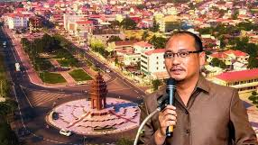
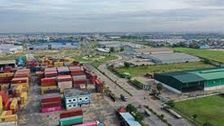
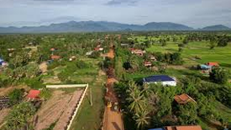
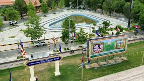
សេដ្ឋកិច្ច និងការអភិវឌ្ឍន៍នៅក្នុងខេត្តកំពង់ឆ្នាំង មានលក្ខណៈចម្រុះ ដោយផ្អែកលើវិស័យប្រពៃណី (កសិកម្ម នេសាទ សិប្បកម្ម) និងការរីកចម្រើននៃវិស័យឧស្សាហកម្ម និងសេវាកម្មមួយចំនួន។
ទិដ្ឋភាពទូទៅនៃសេដ្ឋកិច្ច
ទំហំសេដ្ឋកិច្ច: គិតត្រឹមឆ្នាំ ២០២២ សេដ្ឋកិច្ចខេត្តកំពង់ឆ្នាំង មានទំហំប្រមាណ ៩១៨ លានដុល្លារអាមេរិក ដែលស្មើនឹងប្រមាណ ៣,៤% នៃផលិតផលក្នុងស្រុកសរុប (GDP) ថ្នាក់ជាតិ។
ផលិតផលក្នុងស្រុកសរុបសម្រាប់ប្រជាជនម្នាក់ៗ (GDP Per Capita): ក្នុងឆ្នាំ ២០២២ តួលេខនេះគឺប្រមាណ $១,៥៦៤។
អត្រាភាពក្រីក្រ: ខេត្តបានកាត់បន្ថយអត្រាភាពក្រីក្រគួរឱ្យកត់សម្គាល់។ ពី ៣២,៣% ក្នុងឆ្នាំ ២០០៩ មកនៅត្រឹម ១៨,៩០% ក្នុងឆ្នាំ ២០១៨។ ខេត្តនេះស្ថិតនៅក្នុងតំបន់ទន្លេសាប ដែលធ្លាប់មានអត្រាភាពក្រីក្រខ្ពស់ជាងគេបើប្រៀបធៀបនឹងតំបន់ផ្សេងៗទៀតកាលពីពេលមុន។
វិស័យសេដ្ឋកិច្ចស្នូល
សេដ្ឋកិច្ចរបស់ខេត្តកំពង់ឆ្នាំងពឹងផ្អែកយ៉ាងសំខាន់លើវិស័យអាទិភាពដូចខាងក្រោម៖
១. កសិកម្ម នេសាទ និងកែច្នៃកសិផល (Agriculture, Fishery, and Agro-industry)
ការដាំដុះ: ជាមុខរបរស្នូលរបស់ប្រជាជនភាគច្រើន (៨៥,៥%) ដែលផ្តោតលើ ការបង្កបង្កើនផលស្រូវ ដំឡូងមី (Tapioca) និងដំណាំហូបផ្លែផ្សេងៗទៀត។
ការនេសាទ: ការនេសាទនៅ ទន្លេសាប និងអាងស្តុកទឹក គឺជាប្រភពចំណូលដ៏ធំមួយ។
ឧស្សាហកម្មកសិកម្ម: គឺជាវិស័យដែលមានសក្តានុពលខ្ពស់ក្នុងការវិនិយោគ ដូចជា៖
រោងម៉ាស៊ីនកិនស្រូវ សម្រាប់នាំចេញ។
ផលិតចំណីសត្វ និងជីធម្មជាតិ។
រោងចក្រចម្រាញ់ដំឡូងមី (Tapioca Starch) និងផលិតអេតាណុល។ ថ្មីៗនេះ ក៏មានគម្រោងកិច្ចសហប្រតិបត្តិការឧស្សាហកម្មស្រូវសម័យទំនើបរវាងកម្ពុជា-ចិន ក្នុងខេត្តនេះផងដែរ។
២. ឧស្សាហកម្ម និងសិប្បកម្ម (Industry and Handicrafts)
ឧស្សាហកម្មស្រាល: ខេត្តកំពង់ឆ្នាំងបានក្លាយជាទីតាំងដ៏ស័ក្តិសមសម្រាប់ ឧស្សាហកម្មស្រាល និងរោងចក្រ ដោយសារទីតាំងភូមិសាស្ត្រនៅតាមបណ្តោយផ្លូវជាតិលេខ ៥។
រោងចក្រកាត់ដេរ និងវាយនភ័ណ្ឌ គឺជាឧស្សាហកម្មសំខាន់មួយដែលជួយបង្កើតការងារ។
សិប្បកម្ម: ខេត្តនេះមានភាពល្បីល្បាញតាំងពីយូរលង់មកហើយនូវសិប្បកម្ម គ្រឿងស្មូន (ការធ្វើឆ្នាំងដី ផើងផ្កា) ដែលជាសិល្បៈប្រពៃណីដែលគេនិយមទិញជាវត្ថុអនុស្សាវរីយ៍។
រ៉ែ និងសំណង់: ខេត្តនេះសម្បូរទៅដោយធនធានរ៉ែមួយចំនួនដូចជា ថ្មម៉ាប (Marble) និងថ្មកំបោរ ដែលជួយទ្រទ្រង់ដល់ឧស្សាហកម្មកិនថ្ម និងសម្ភារសំណង់។
៣. ទេសចរណ៍ (Tourism)
ទេសចរណ៍ធម្មជាតិ និងវប្បធម៌: ខេត្តកំពង់ឆ្នាំងមានសក្តានុពលក្នុងការអភិវឌ្ឍទេសចរណ៍បរិស្ថាន (Eco-tourism) ជុំវិញតំបន់ ទន្លេសាប និង ភូមិអណ្តែតទឹក (ដែលបច្ចុប្បន្នជាផ្ទះលើបង្គោល)។
តំបន់ប្រវត្តិសាស្ត្រ: វត្តអារាម និងទីតាំងបុរាណមួយចំនួន គឺជាកន្លែងទាក់ទាញភ្ញៀវទេសចរ។
គម្រោងអភិវឌ្ឍន៍ និងទិសដៅអនាគត
រដ្ឋបាលខេត្តកំពង់ឆ្នាំងបានកំណត់នូវក្របខ័ណ្ឌអភិវឌ្ឍន៍ដើម្បីប្រែក្លាយខេត្តឱ្យកាន់តែរីកចម្រើន៖
ការអភិវឌ្ឍហេដ្ឋារចនាសម្ព័ន្ធ: ការកែលម្អប្រព័ន្ធផ្លូវថ្នល់ (ផ្លូវជាតិលេខ ៥) ប្រព័ន្ធផ្គត់ផ្គង់អគ្គិសនី ទឹកស្អាត និងប្រព័ន្ធធារាសាស្ត្រ ដើម្បីគាំទ្រដល់វិស័យកសិកម្ម។
ការពង្រីកទីក្រុង: ផែនការអភិវឌ្ឍន៍ទីក្រុងកំពង់ឆ្នាំង គឺដើម្បីធ្វើឱ្យទីប្រជុំជននេះក្លាយជា មជ្ឈមណ្ឌលពាណិជ្ជកម្ម និងទេសចរណ៍ថ្នាក់តំបន់ (Regional Commercial and Tourism Hub) នៅឆ្នាំ ២០២៦-២០៣០ ដោយផ្តោតលើការអភិវឌ្ឍប្រកបដោយចីរភាព។
ទាក់ទាញការវិនិយោគ: បន្តលើកកម្ពស់ខេត្តជាទីតាំងអាទិភាពសម្រាប់ការវិនិយោគរោងចក្រ និងឧស្សាហកម្មកែច្នៃកសិផល ដើម្បីបង្កើនកំណើនសេដ្ឋកិច្ច និងឱកាសការងារសម្រាប់ប្រជាជន។